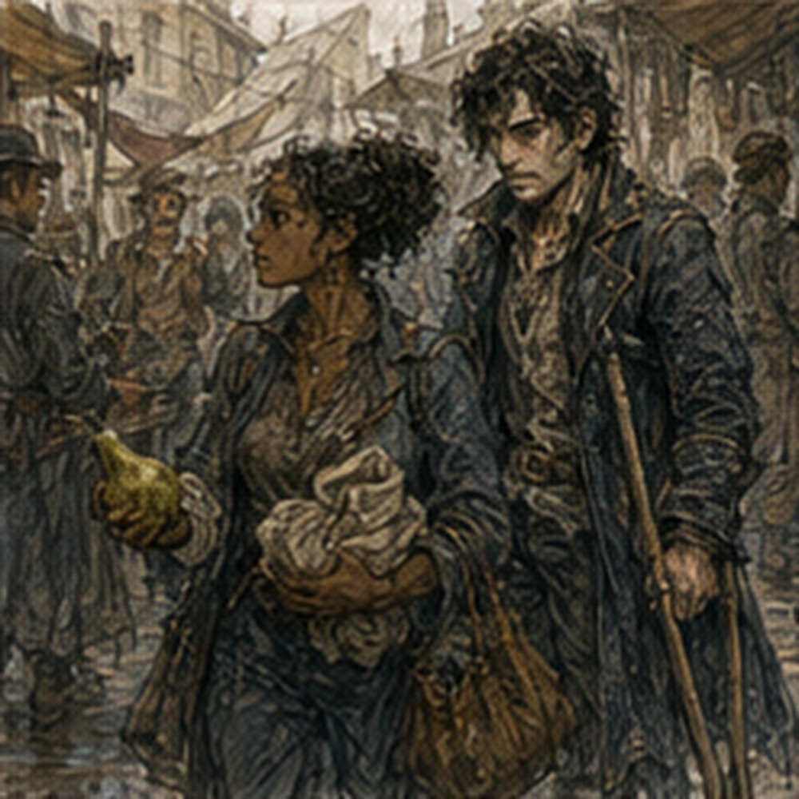
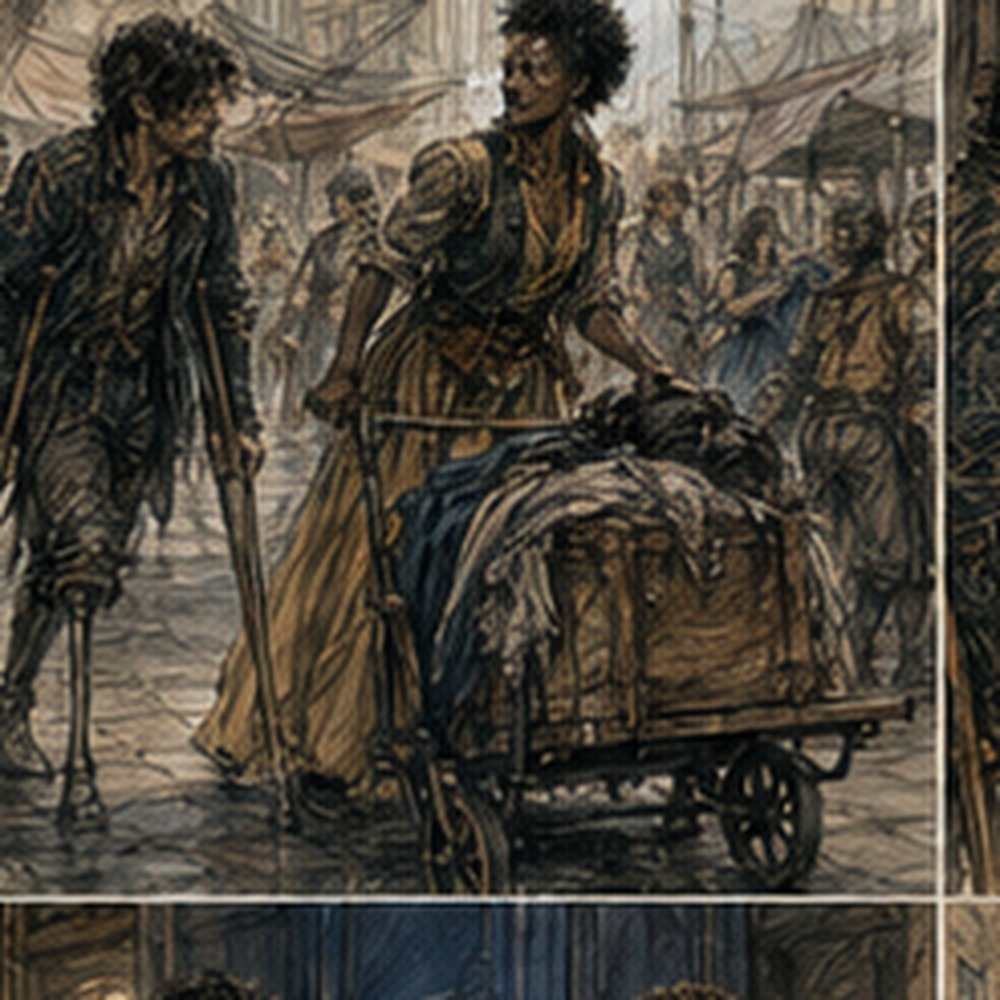

Lyssa found me buying pears.
This was inconvenient because I had already rejected two pears for being soft and was examining a third with more seriousness than fruit deserved.
“You look suspicious.”
I looked up.
Lyssa stood on the other side of the stall with a wrapped bundle tucked under one arm.
She was taller than the woman beside her, thinner than most of the crowd, her hair catching the morning light around her head.
“I am purchasing fruit.”
“Exactly.”
The pear seller looked between us.
“I don't want to know.”
“You do,” Lyssa said.
“I don't.”
I bought the pear.
Lyssa waited until we had moved away from the stall.
Then she held out her hand.
“For what?”
“The pear.”
“I bought it.”
“I found you.”
“That does not establish ownership.”
“It establishes a fee.”
“You are becoming like the keeper.”
“Terrifying.”
I gave her the pear.
She took one bite.
“This is good.”
“I know.”
“You tested it?”
“I inspected it.”
“You touched three.”
“Two failed.”
She laughed. Pear thief.
I had not seen her in several days.
That was long enough for the fact of her to feel new for about half a second.
Then not new.
Better.
“What are you doing?” I asked.
“Working.”
She lifted the bundle.
“What is it?”
“Cloth.”
“I can see that.”
“Then why ask?”
“Destination.”
“North side.”
“Paid?”
“Yes.”
“Time?”
She narrowed her eyes.
“That one was almost normal.”
“I am improving.”
“No.”
Fair.
She took another bite of my pear.
“Where are you going?”
“I was getting breakfast.”
“This is breakfast?”
“No. This is pear.”
“Good distinction.”
“I had not selected the rest.”
“Come with me.”
“North side?”
“Yes.”
“That is the opposite direction from the food I wanted.”
“Then don't.”
She kept walking.
I followed.
This was not difficult.
Not physically.
The north-side streets were busier than I preferred at that hour, but the grade was mild and the paving mostly intact.
Lyssa did not slow herself into a performance.
She also did not disappear.
She walked.
I walked.
Sometimes she was half a pace ahead.
Sometimes beside me.
At one corner a cart blocked most of the crossing, and she went through the narrow gap before realizing my crutches would not fit comfortably.
She stopped on the other side.
I went around the back of the cart.
When I reached her, she said:
“Sorry.”
“Why?”
“I picked the stupid gap.”
“Yes.”
“You could say it's fine.”
“It was fine.”
“You could say that before agreeing it was stupid.”
“Both can be true.”
She shook her head.
We continued.
At the next crossing a delivery wagon had stopped crooked, leaving a strip of paving between its rear wheel and a stack of baskets.
Lyssa looked at the gap.
Then at me.
“I'm learning.”
“Congratulations.”
She went around the front instead.
That route was longer but wide.
I followed.
“Was that correct?” she asked.
“There is no test.”
“Pessa would hate that answer.”
“Pessa would hate the question.”
“Who is Pessa?”
I looked at her.
“You have not met Pessa?”
“I've heard the name.”
“Movement.”
“That explains nothing.”
“She teaches movement.”
“Your movement?”
“Sometimes.”
“Does she like you?”
“No.”
“Then probably.”
“That is not how liking works.”
“It is with some people.”
I thought of Pessa refusing to tell me what she measured.
Maybe.
No.
Separate.
“She owns the yard,” I said.
“That sounds threatening.”
“It is mostly dirt.”
“Terrifying.”
We continued.
No lesson.
Good.
“What happened to the theatre?” she asked.
“Still there.”
“That wasn't what I asked.”
“I have been going.”
“I know.”
“Jorren?”
“Jorren.”
Traitor.
“What did he say?”
“That you read something.”
“That is broad.”
“That people yell at you.”
“That is also broad.”
“That you keep going back.”
“Yes.”
She glanced at me.
“Still because you want to?”
“Yes.”
“Good.”
I waited for the rest.
There wasn't any.
This was one of Lyssa's better habits.
She could ask a question and then not turn the answer into a project.
We reached a long low building with blue shutters.
Lyssa went inside.
I remained outside.
She looked back.
“You can come.”
“Is that allowed?”
“Yes.”
“Do they know?”
“No.”
“That is not the same answer.”
“They don't care.”
I considered.
She was probably better at this than me.
I went in.
The front room smelled like soap, wool, and hot metal.
A woman behind a counter took Lyssa's bundle, untied it, checked the cloth, checked a small slip, and counted coins.
Not my business.
I looked at a rack of dyed cord.
The red was too bright.
The blue was better.
Lyssa finished.
“Done.”
“That was fast.”
“Disappointed?”
“I was prepared to wait.”
“Why?”
“You were working.”
She looked at me strangely.
Not bad.
Just a second too long.
Then:
“Come on.”
Outside, she gave me the pear core.
“This is trash.”
“Yes.”
“You ate my pear and returned the structural remains.”
“Efficient.”
I found a bin.
Then she stopped at a food stall and bought two small fried cakes.
One for her.
One for me.
“Compensation,” she said.
“For pear theft?”
“For emotional damage.”
“Insufficient.”
“Give it back.”
I ate it.
She smiled.
We walked without a destination for several minutes.
That was unusual enough that I noticed.
“Do you have more work?”
“Later.”
“How much later?”
“Enough.”
“Enough for what?”
She looked around.
“I don't know.”
That answer should have bothered me.
It didn't.
Mostly.
We ended up near a small square with a dry fountain in the center.
Not broken.
Just dry.
Children were using the basin as a place to roll wooden hoops.
Lyssa sat on the fountain edge.
I sat beside her.
Crutches against the stone.
The height was good.
No negotiation.
No chair.
No stairs.
We ate.
She watched the children.
I watched a boy attempt to roll his hoop around the fountain without touching the wall.
He failed at the same corner three times.
Changed hands.
Failed differently.
Good.
No.
Not Pessa.
Child with hoop.
I ate.
Lyssa bumped my shoulder.
“You're doing the face.”
“What face?”
“The one.”
“There are apparently several.”
“This one is quieter.”
“That is not descriptive.”
“You're thinking too hard.”
“I am watching.”
“Same problem.”
“No.”
She leaned back on her hands.
“What are you thinking about?”
Thread.
Airflow.
Copper.
REACH.
Two movements.
No established external effect.
Hessa refusing the apparatus.
Two living days.
I could answer all of that.
Instead:
“A hoop.”
Lyssa looked at the boy.
“He's bad.”
“He is improving.”
“You don't know that.”
“He changed hands.”
“That could make him worse.”
I looked at her.
She grinned.
“You're terrible.”
“I listen.”
Apparently everyone did.
The boy hit the wall again.
This time the hoop stayed upright.
He chased it.
Success by technicality.
Lyssa clapped once.
The boy looked over, embarrassed, then kept going.
“What happened with Hessa?” she asked.
There.
Natural enough.
I considered the exact answer.
“She let me try something outside my arm.”
Lyssa sat up.
“Magic?”
“A test.”
“That sounds like magic.”
“It was a magic test.”
“What happened?”
“A thread moved.”
Her eyes widened.
“Greg.”
“Maybe.”
“What do you mean maybe?”
“It moved before the test too.”
She stared.
“So you don't know?”
“No.”
“That's awful.”
I laughed.
“Yes.”
“Did you do it again?”
“No.”
“Why not?”
“Hessa said one attempt.”
“And?”
“And one attempt.”
Lyssa looked at me.
“You listened?”
“Yes.”
“Are you sick?”
“No symptoms.”
“I meant because you listened.”
“I understood.”
She laughed.
Then her expression changed.
Not fear.
Attention.
“Are you okay?”
“Yes.”
“Hand?”
“Normal.”
She reached for it.
Not examination.
Just hand.
I gave her the right one.
She held it between both of hers for a moment.
Warm.
Ordinary.
No test.
No thumb check.
I did not move the fingers to prove anything.
Good.
No.
Stop scoring.
She traced one knuckle with her thumb.
“So the thread moved.”
“Yes.”
“But maybe not you.”
“Yes.”
“And Hessa won't let you try again.”
“For two days.”
“That's mean.”
“Correct.”
“What are you going to do?”
“Today?”
“Yes.”
“I am apparently delivering cloth.”
“You watched me deliver cloth.”
“I provided oversight.”
“You looked at string.”
“Dyed cord.”
“Critical.”
“And now?”
She looked around the square.
“I have another delivery after midday.”
“How long?”
“Maybe an hour.”
I checked the sun.
Not precisely.
Enough.
“What do you want to do?”
She asked it casually.
I had several answers.
Theatre.
Guild.
Food.
Sit here.
Her.
That last one was not an activity.
Probably.
“Stay here.”
Lyssa nodded.
So we did.
This was extremely inefficient.
Lyssa took the second fried cake apart with her fingers instead of biting it.
“You're destroying it.”
“I'm eating it.”
“You have converted it into debris.”
“Want some debris?”
“Yes.”
She handed me half.
The inside was still warm.
I ate it.
“Better than pear?”
“No.”
“You paid for the pear.”
“That is not why.”
“Sentimental.”
“It was a superior pear.”
She leaned forward, elbows on her knees.
“Do you ever just like something?”
“Yes.”
“Without proving it?”
“Yes.”
“Name one.”
I looked at her.
She waited.
This was a trap with an obvious answer.
I refused it on principle.
“Theatre.”
Her eyebrows went up.
“That was fast.”
“You asked.”
“I expected you to say soup.”
“I also like soup.”
“Without proving it?”
“Depends on soup.”
She laughed.
I looked back at the children.
One had abandoned the hoop and was now trying to walk along the fountain rim with both arms out.
His friend followed.
A woman across the square told them to get down.
They ignored her.
She stood.
They got down.
Efficient authority.
No.
Not my problem.
Lyssa said, “Do you like me without proving it?”
There.
I looked at her.
She was smiling, but not entirely joking.
“Yes.”
The answer came before analysis.
That was rude.
To me.
Lyssa's smile changed.
Smaller.
“Good.”
“Do not say that.”
“What?”
“That word.”
“Good?”
“Yes.”
“Why?”
“Everyone has started using it against me.”
“I've been using it against you longer than them.”
“That may be true.”
“It is.”
She bumped my knee with hers.
Right knee.
Easy.
“Do you like me?” I asked.
She stared at me.
“What?”
“You asked.”
“I know.”
“Reciprocity.”
“You make romance sound like a trade dispute.”
“This is not romance.”
Her face did something dangerous.
I heard myself.
“Poor phrasing.”
“Very.”
“I meant the question is not a formal relationship declaration.”
“That fixed it.”
“It did not.”
“No.”
I considered abandoning speech.
Lyssa rescued me.
“Yes.”
“Yes what?”
“I like you.”
“Without proving it?”
“Unfortunately.”
“That seems hostile.”
“It is.”
She leaned over and kissed my cheek.
Then sat back as though nothing had happened.
I touched the spot.
“You are working later.”
“Yes.”
“That was unrelated.”
“Completely.”
The dry fountain did not become less dry.
A vendor crossed the square with a shoulder pole carrying two baskets of small yellow flowers.
Lyssa watched him.
“You want one?” I asked.
“No.”
“Good.”
She looked at me.
“I don't want flowers every time we're together.”
“I have never bought you flowers.”

“Exactly. Don't ruin it.”
“I was not planning to.”
“Good.”
“Stop.”
She smiled.
A bell rang somewhere beyond the square.
Not noon.
Probably.
Lyssa looked toward the sound, then relaxed again.
Still time.
That mattered because she had work later.
Not because time had to become useful.
I had spent enough of my life measuring hours by what they produced.
This hour produced fried crumbs and bad conversation.
Acceptable.
The children changed.
A woman came with a basket of greens and sat across the square.
Two men argued about a wheel.
Someone's dog slept under a bench.
Lyssa told me about a customer who had spent ten minutes insisting a bundle was not hers because the string was brown instead of tan.
“Was it hers?”
“Yes.”
“How did you establish that?”
“She opened it.”
“That seems conclusive.”
“She still complained.”
“About the string?”
“About being wrong.”
Reasonable.
I told her about the theatre prop letter.
Not the whole rehearsal.
Just two red seals, dead uncle versus horse purchase.
She laughed at the horse.
“Did he buy it?”
“In the play.”
“Coward.”
“The wife said that.”
“Smart woman.”
“You do not know her.”
“I know enough.”
I told her the servant finally dropped the cup.
She looked at me.
“You were waiting for that?”
“No.”
“Liar.”
“Everyone says that now.”
“Maybe because you lie badly.”
“I do not.”
“You absolutely waited for the cup.”
“I had noticed a pattern.”
“Greg.”
“Fine.”
She leaned against my shoulder for a while.
Not a kiss.
Not a declaration.
Weight.
Warmth.
Her hair touched the side of my face when the wind shifted.
I could feel the stone edge under my thigh.
The right foot planted.
The absent left foot also felt planted, slightly forward.
It wasn't.
Ordinary phantom.
No magic.
I did not tell her.
Nothing needed doing.
Eventually she said:
“I have to go.”
“Yes.”
She did not move.
Neither did I.
Then:
“Now.”
“Yes.”
Still nothing.
She laughed into my shoulder.
“This is your fault.”
“I am not restraining you.”
“You're comfortable, Aileen.”
“That is not misconduct.”
“Debatable.”
She stood.
I took the crutches.
She waited while I got upright.
Not helping.
Not leaving.
We walked back toward the market.
At the next corner she turned east.
I was going west.
Probably.
“Tomorrow?” she asked.
“No magic tomorrow.”
She stared.
“That was not what I asked.”
I stopped.
Apparently this was spreading.
“I know.”
“Do you?”
“Yes.”
“What are you doing tomorrow?”
“I don't know.”
“Good.”
I pointed at her.
“No.”
“What?”
“Everyone keeps saying that.”
“Maybe everyone is right.”
“Unlikely.”
She stepped closer.
Kissed me.
Not cheek.
Mouth.
Brief.
Easy.
Then she stepped back.
“I'll find you.”
“That is not scheduling.”
“No.”
“Where?”
She smiled.
“Terrifying, isn't it?”
Then she left.
I stood at the corner.
This was becoming a problem.
Not the kiss.
The lack of schedule.
Maybe both.
No.
Definitely not the kiss.
I went west.
At the market edge I passed the same pear stall.
The seller recognized me.
“No refunds.”
“I am not requesting one.”
“Girl ate it?”
“Most.”
He nodded solemnly.
“Tragedy.”
“I survived.”
“Barely.”
I bought another pear.
Did not inspect three.
The first one was fine.
I realized this only after paying.
Dangerous.
No.
Fruit.
I ate it while walking.
Not immediately to theatre.
I stopped for water.
Then bread.
Then spent too much time deciding whether I wanted to keep walking.
My shoulders were fine.
Palms fine.
Right calf fine.
Residual limb quiet.
No thumb.
No magic.
Theatre was still there.
So was the Guild.
So was my room.
Hessa's thread was somewhere behind me, inaccessible.
Lyssa was east, working.
I had no obligation in any direction.
This should have made choosing harder.
Instead I went home.
The keeper looked at me.
“Early.”
“Yes.”
“Bad day?”
“No.”
“Magic?”
“No.”
“Theatre?”
“No.”
“Date?”
I considered.
“I don't know.”
He smiled.
I regretted everything.
Upstairs, I opened the window.
Did not open the notebook.
That was deliberate.
Not noble.
I knew exactly what I would write if I did.
THREAD MOVEMENT ONE:
toward forearm.
THREAD MOVEMENT TWO:
sideways.
BASELINE:
variable.
POSSIBLE CONFOUNDS:
No.
Hessa had not forbidden writing.
She had forbidden testing.
But the line between recording and building a private experiment had become obvious enough that I could see myself approaching it.
I left the notebook closed.
Instead I ate the bread.
The pear had been better.
Lyssa had stolen most of it.
Tomorrow was the second no-magic day.
The thread could remain a thread until then.
Probably.
I touched my mouth once.
Different problem.